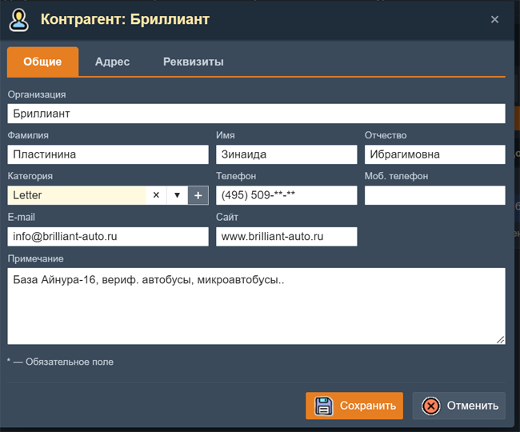
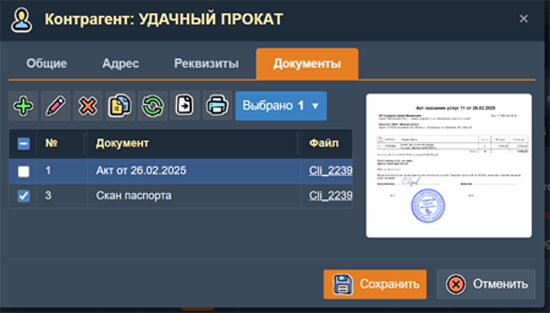
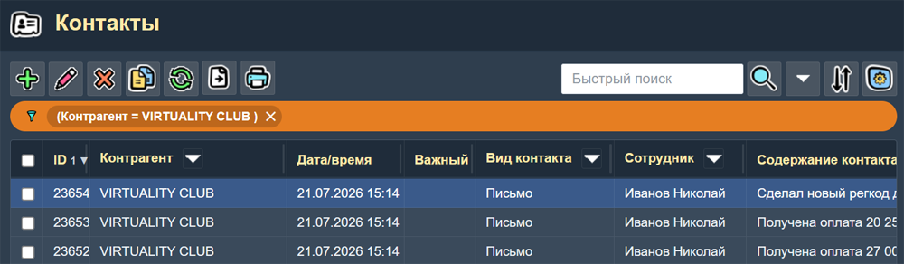

Контрагенты
Раздел Контрагенты предназначен для ведения базы клиентов и поставщиков, а также вспомогательных справочников: категорий контрагентов, видов деятельности, типов контактов и источников рекламы.
1. Контрагенты
Основная страница учёта клиентов и поставщиков. Содержит полную информацию о каждом контрагенте.

Таблица контрагентов с включенными фильтрами по Категории и Городу.
Поиск
В этой таблице доступен быстрый поиск по любому полю записи о контрагенте. Можно также использовать "колоночные фильтры" по "Категории", "Городу" и "Стране". Результат их работы показан на скриншоте выше.
Печать
Можно напечатать (или экспортировать) список всех контрагентов, только отмеченных или отдельной страницы. Список выводится с учётом всех включенных фильтров. Через систему разделения доступа можно запретить печать и экспорт списка контрагентов для некоторых категорий сотрудников.
В панели инструментов этой таблицы есть дополнительные (не стандартные) кнопки:
- Контакты — открывает страницу "Контакты" с записями о контактах выбранного контрагента.
- Контакты — открывает страницу "Контакты" с записями о контактах выбранного контрагента.
- Оплата — открывает страницу "Кассовая книга" с записями об операциях с деньгами выбранного контрагента.
Колонки таблицы
- Контрагент — наименование контрагента - организации или физического лица.
- Фамлия, Имя и Отчество — ФИО контрагента.
- Категория — категория контрагента (опт, розница, VIP и т.д.).
- Виды деятельности — виды деятельности контрагента.
- Телефон — контактный телефон.
- Email — адрес электронной почты.
- Город — населённый пункт.
- Страна — страна контрагента.
- Адрес — фактический адрес.
- Примечание — произволные примечания о контрагенте.
При помощи панели "Настройка столбцов таблицы" можно включить (или выключить) видимость и доугих полей записи о контрагенте а также изменить порядок вывода колонок в таблице. Прокручивать колонки по горизонтали можно клавишами Left и Right.
Форма редактирования контрагента

Форма редактирования контрагента.
Поля формы Контрагент
Вкладка "Общие":
- Организация — название организации (если есть).
- Фамилия, Имя и Отчество — поля для ФИО физического лица.
- Категория — выбор из справочника категорий контрагентов.
- Телефон — номер телефона.
- Сотовый телефон — номер сотового телефона.
- Email — адрес электронной почты.
- Сайт — адрес сайта контрагента.
- Поставщик — признак "Поставщик".
- Проблемный — признак "Проблемный".
- Скрыт — признак "Скрыт". Скрытые записи показываются в таблице только если в параметрах настройки приложения включен флаг "Показывать все записи".
- Примечание — большое поле для произвольныж заметок о контрагенте.
Вкладка "Адрес":
- Город — выбор из справочника городов.
- Страна — выбор из справочника стран.
- Индекс — почтовый индекс.
- Юридический адрес — юридический адрес (для организации).
- Фактический адрес — аактический адрес.
Вкладка "Реквизиты":
- ИНН — ИНН налогоплательщика.
- КПП — КПП организации.
- ОГРН — код ОГРН.
- Банк — название банка.
- БИК — код БИК.
- Счет — расчетный счет.
- Корсчет — корреспондетский счет.
- Директор — ФИО директора.
- Главбух — ФИО главного бухгалтера.
- Реклама — выбор источника рекламы из справочника.
- Виды деятельности — выбор выбор одного или нескольких видов деятельности из справочника.
Вкладка "Документы".
На этой вкладке находится таблица со списком документов (файлов), связанных с данным контрагентом. Это могут быть фотографии докуметов клиента (паспорт и пр.), файлы различных документов и т.п. Здесь же выводится само изображение (для файлов изображений). Клик по этому изображению или имени файла в таблице открывает изображение в большом масштабе в отдельной вкладке браузера.

Вкладка "Документы" формы контрагента.
Особенности
- С контрагентом может быть связано несколько контактов (см. раздел 2).
- Контрагент фигурирует в документах (счета, накладные, заказы).
- При выборе контрагента в документах его данные (наименование, адрес, телефонб реквизиты) подставляются автоматически.
2. Контакты
Таблица записей о контактах с контрагентами. Позволяет хранить сколько угодно записей о контактах для каждого из контрагентов. Эту таблицу можно открыть из главного меню приложения или при помощи кнопки "Контакты" на странице "Контрагенты" - чтобы посмотреть записи о контактах выбранного контрагента.

Таблица контакнтов с включенным фильтром по Контрагенту.
В этой таблице доступен быстрый поиск по любому полю записи о контакте. Можно также использовать "колоночные фильтры" по "Контрагенту", "Виду контакта" и по "Сотруднику".
Колонки таблицы:
- ID — уникальный код записи о контакте.
- Контрагент — название контрагента.
- Дата/время — Дата и время контакта.
- Важный — признак важного контакта.
- Вид контакта — выбор из стравочника видов контакта.
- Сотрудник — сотрудник, создавший запись о контакте.
- Содержание контакта — большое поле с описанием контакта.
3. Категории контрагентов
Справочник категорий для группировки контрагентов: оптовые, розничные, VIP, дилеры и т.д.
Колонки таблицы
- Категория — название категории.
- Поставщик — признак поставщика.
- Проблемный — признак проблемного контрагента.
- Цвет — выбор цвета выделения для этой категории контрагентов.
- Примечаие — примечание о категории.
Категория используется как поле-справочник в форме контрагента. Цвет выделения используется в таблице "Контрагенты".
4. Виды деятельности
Справочник видов деятельности контрагентов (торговля, производство, услуги и т.д.). Содержит два поля: Вид деятельности и Примечание.
5. Виды контактов
Справочник видов контактов: телефон, электронная почта, встреча, WhatsApp, Telegram и т.д. Содержит поля Видконтакта, признак Важный и Примечание.
Используется в записи о контакте (раздел 2).
6. Виды рекламы
Справочник источников рекламы: звонок, сайт, рекомендация, контекстная реклама, соцсети и т.д. Позволяет отслеживать, откуда пришёл клиент. Содержит следующие поля:
- Вид рекламы — название вида рекламы.
- Дата начала — дата окончания рекламной компании.
- Дата окончания — дата начала рекламной компании.
- Количество клиентов — количество клиентов с этим видом рекламы.
- Процент — процент клиентов с этим видом рекламы от общего их числа.
- Примечаие — примечание о виде рекламы.
В рерхней части страницы "Виды рекламы" имеется кнопка "Пересчет", при помощи которой можно пересчитать текущие данные о количестве клиентов и проценте для всех видов рекламы.